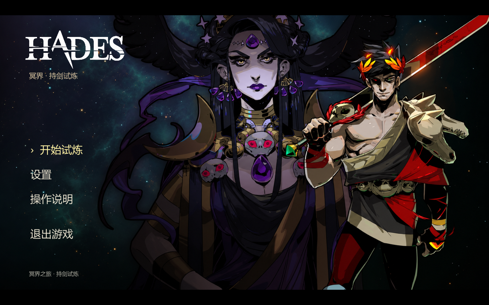
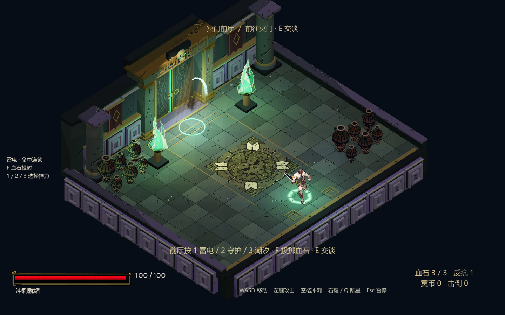
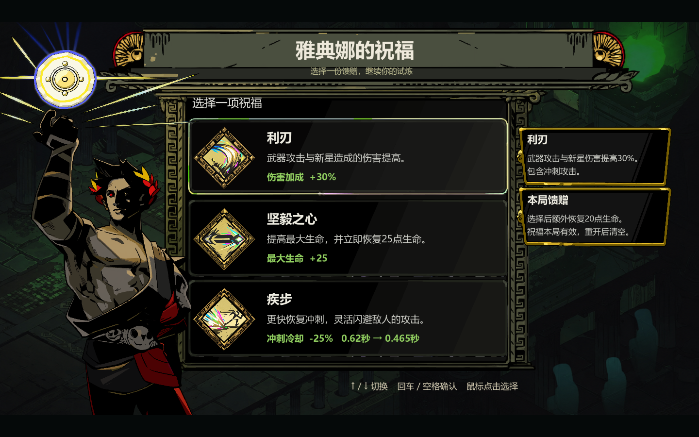
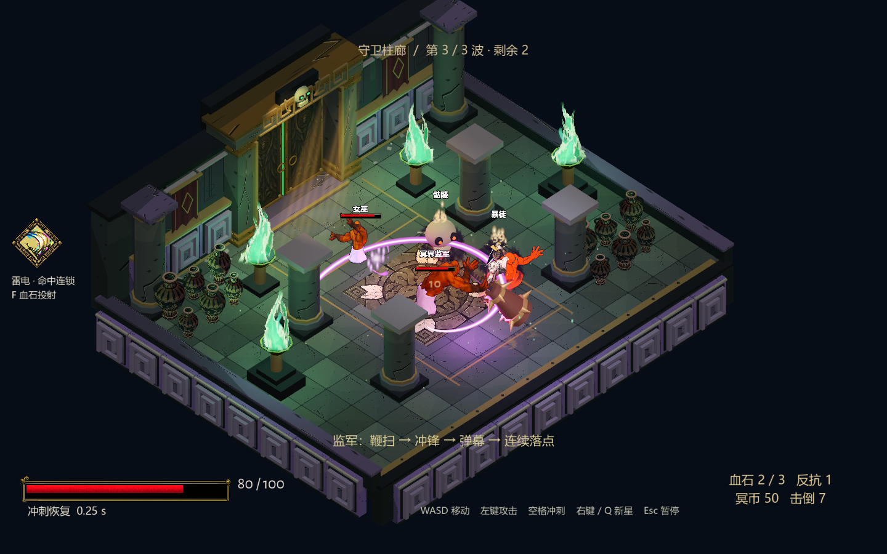
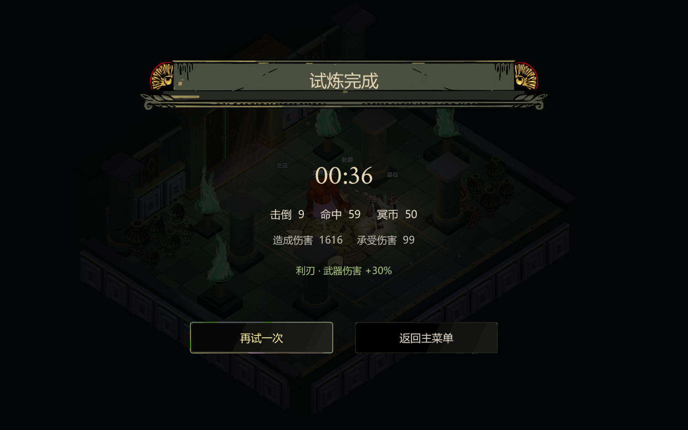

From the main menu to the final encounter.
Blade Trial is a Hades-inspired, three-room combat demo. A complete run connects the entrance, dialogue, two combat waves, a boon choice, and a boss encounter with working victory, defeat, retry, and menu flows.
- Main menu
- Entrance & dialogue
- Combat waves
- Reward & boon
- Boss encounter
- Results & retry
Complete recorded runs
47.93 seconds · 1440 × 900 · 30 fps · No audio track. Nine enemies defeated, including the boss. One normal death-defiance charge was consumed.
Open victory video43.50 seconds · 1440 × 900 · 30 fps · No audio track. The automated player approaches enemies and stops attacking; actual enemy damage triggers both deaths.
Open defeat videoGodot 4.7.2 loads the final Windows release PCK and renders native game frames. Automated keyboard and mouse InputEvent events navigate menus, move, aim, attack, cast, dodge, and select a boon while normal physics and enemy AI run.
The replay does not edit health, resources, or spawns; teleport actors; inject victory or defeat; or call character action methods directly. It captures only the game viewport. These are automated playthroughs, not recordings of a human player.
The release executable was separately checked through its default startup path. The replay harness runs with the Godot engine and the release PCK because the release template does not execute the external test script.
Inside the demo


Start a fresh trial, adjust settings, or read the controls.


Choose an elemental family and approach the portal to begin.

Two waves combine melee pressure, ranged attacks, and charging enemies.


Choose increased weapon damage, more maximum health, or faster dash recovery.


The overseer uses a sweep, rush, projectile barrage, and repeated ground attacks.


Both endings support retry and return-to-menu actions.
Controls
Current limits
- This is a playable integration demo. Original-game visual fidelity is still unfinished, including character materials, weapon alignment, and environment detail.
- Victory results immediately freeze the background scene. The final enemy's death animation can therefore remain in a transitional pose.
- These recordings are silent. They do not demonstrate audio quality.